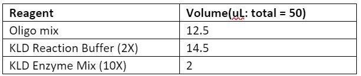

Our protocols
OBJECTIVE:
Sort cells containing the highest fluorescent (implying strongest affinity for non-cognate AHL) onto a 96 well plate.DESCRIPTION:
• Scrape variant colonies from a plate into a single tube and grow it overnight.• FACS-cell sort single variants into individual wells on a 96-well plate based on fluorescence intensity above user-defined gated threshold.
• Grow each individual variant (within the 96-well plate) overnight in TECAN.
MATERIALS & APPARATUS:
• Fumehood• Conical flask
• Spectrophotometer
• Autoclaved 2-YT media
• Falcon tubes
• 96-well plates
• Kanamycin
• Chloramphenicol
• AHLs
• PBS
• FACS tubes
• Centrifuge
• FACS machine
• TECAN machine
PROCEDURE:
Day 1:1. Prepare starter culture of variant library by adding 2xYT media up to 8mL with appropriate antibiotics at working concentrations. Or, if growing variants on a plate, scrape variant colonies off plate using spreader and wash into 50mL Falcon tube with 2xYT media.
2. Let grow overnight in shaking incubator set to 220rpm at 37C.
Day 2:
Preparing cells for FACS:
1. Pre-cool the centrifuge to 4C (spin at 4000rpm for 5min at 4C).
2. Centrifuge the overnight culture at 4000 rpm for 5min to collect the cells. Discard the supernatant and resuspend the cells in 2mL of PBS.
3. Centrifuge the cells at 4000 rpm for 5mins again, discard the supernatant and resuspend in 2mL of PBS.
4. Dilute the overnight culture to 10-20 x 106 cells (approx. 0.015 OD600) in PBS.
Preparing 96-well plates for FACS:
1. Add 150uL 2xYT media to the outermost ring of wells on the 96-well plate to prevent evaporation of sample.
2. Add 2-YT media and AHL to each inner well (6x10 grid) to make up a total final volume of 150uL.
Note that the concentration of AHL used will depend on the initial screening from stage 1.
Cell sorting (FACS):
1. Run flow analysis; set gates using controls. Determine the lowest (and highest) fluorescence threshold at which cells can be sorted into each well.
1.a. Negative control: Cells containing variant library grown in absence of AHL
1.b. Positive control: Cells containing wildtype gene grown with cognate AHL.
2. Run FACS.
Characterisation (TECAN)
1. After the top fluorescing cells have been individually sorted into each well of a 96-well plate (note that there will be a maximum of 60 fluorescent variants sorted), seal the plate with a gas seal and leave at 37C in a shaking incubator for 4 hours to allow the cells to grow into mid-log phase.
2. After 4 hours has passed, place a heat-pack on the plate to reduce condensation on the gas seal.
3. Divide the contents of each well equally into three new 96-well plates containing 2xYT broth and:
3.a. Plate 1: No AHL (100uL 2xYT broth + 50uL cells)
3.b. Plate 2: 3OC6HSL (cognate),
3.c. Plate 3: Non-cognate (target).
Note that the volume of AHL added depends on the final concentration obtained in 150uL, and is consistent between plates 2 and 3.
4. Measure start-point readings of each plate using TECAN microplate reader, seal each plate with a gas seal and leave at 37C in a shaking incubator overnight.
Day 3:
1. Measure the end-point fluorescence of each plate on the TECAN plate reader. Normalise fluorescence readings against background and OD600.
2. Miniprep the cells that show desired fluorescence behaviour to send off purified plasmids for sequencing.
2.a. See LuxR plasmid miniprep protocol.
DESCRIPTION:
This method can be used to assemble a gene cassette around 1 kb long. It can be used to assemble both a wild-type gene and a library of variants without requiring a wild-type template. The resulting gene insert can be cloned into a plasmid using standard cloning methods such as Gibson Assembly.PROCEDURE:
Primer design1. Choose target residues on the wild-type protein to mutate using site-saturation of mixed codons at those residue positions. This leads to a library of variants with different binding affinities to the target ligand partner. The size of the library is dependent on the number of residues chosen to mutate. In this project, site-saturation using NDT codons was conducted, leading to the incorporation of 12 codons at each position. Thus, the library size would be 12x where x is the number of residues targeted. Codons on the template strand are encoded as 5’-NDT-3', and on the non-template strand as 5’-NHA-3'.
2. Design single-stranded template strand oligomers of up to 100bases in length containing mutagenic codons, which will reconstitute the entire cassette when ligated end-to-end.
3. To ensure that these oligomers arrange in the correct order, design a set of bridge oligomers of 40 bases in length which anneal to two consecutive template oligomers; the last 20 bases of the previous template oligomer, and the first 20 bases of the subsequent template oligomer.
4. To reconstitute a full-length double-stranded gene segment, also design standard PCR primers against the most 5’ end of the first template oligo and the most 3’ end of the last template oligo.
5. In order to ensure that complete insert is assembled with the vector, Gibson assembly ends are incorporated into the first and final template strand oligo. Compatible ends are also incorporated into the vector via PCR primers to amplify the region of the backbone necessary for Gibson assembly.
Ligation of the template oligos
1. Run a KLD reaction using an equimolar mix of all oligos from 10 µM stocks (template and non-template) as the ligation substrate. For example, for a reaction containing 13 template oligos and 12 non-template oligos, add 1 µL of each oligo from their 10 µM stocks to create a oligo mix with total volume of 25 µL.
2. Run a PCR using a high-fidelity Polymerase to reconstitute a full-length double-stranded gene segment.
Table 1. Reagents required for ligation of the template oligos

3. Run a PCR using a high-fidelity Polymerase to amplify the plasmid backbone to clone into.
Cloning the gene segment into a plasmid
1. Run the PCR products on a gel with a 1kb+ DNA ladder to confirm the correct insert size. Using the NEB Monarch Gel Extraction kit, purify the PCR products. This should result in one tube containing the mutagenic insert, and another tube containing the plasmid backbone. Nanodrop both samples for exact DNA concentrations, in order to prepare for the correct molar ratio for Gibson assembly.
2. The required amounts of both fragments can be calculated using the NEB Ligation Calculator. NEB recommends that there are 0.02-0.5 pmols of each fragment for a 2-fragment assembly. Mix the reagents into a tube and incubate at 50 oC for 1 hour.
3. Transform competent cells with 1 µL of the Gibson reaction. Recover in SOC for 1 hour in a shaking incubator at 37C. Plate on agar containing suitable antibiotics and leave to grow overnight at 37C.
DESCRIPTION:
This method requires an existing plasmid containing the wild-type gene of interest.PROCEDURE:
1. Primer design• Choose target residues on the wild-type protein to mutate. The residues should be chosen with the desired library in mind, for example, to generate a library of variants with different binding affinities you would choose residues in the binding pocket that are likely to interact with the binding partner. The number of residues chosen determines the size of the library. For site-saturation using NDT codons (12 codons), the library size would be 12x where x is the number of residues targeted.
• Determine the length of the mutagenic fragment. There should be at least 15-20 nucleotides flanking the 5’ end of the first mutagenic codon and the 3’ end of the last mutagenic codon, these are the required overlaps for Gibson cloning.
• Design oligos to generate the mutagenic fragment. The oligos should face internally and have an overlap of at least 20 nucleotides so that they may anneal against each other. For ordering the oligos, replace the wild-type sequence with NDT on the template strand and AHN on the non-template strand.
• Design oligo primers that will amplify the rest of the plasmid excluding the mutagenic fragment. These should anneal against the 15-20 nucleotide flanking overlaps. These primers should be designed with standard PCR primer rules: 15-20 nucleotides, with around 50% GC content and melting temperatures around 50-60 oC.
2. PCR to generate the DNA fragments
• Run a PCR reaction using Q5 Polymerase to amplify the backbone using the wild-type plasmid as template
• Run a template-less PCR with mutagenic primers using Q5 Polymerase (replace the 1 µL of template DNA with nuclease-free water).
Table 1. Reagents required for the NEB Q5 HotStart Master Mix
 Table 2. Thermocycling conditions to generate the mutagenic DNA fragments
Table 2. Thermocycling conditions to generate the mutagenic DNA fragments * The annealing temperature can be calculated using the NEB Tm Calculator
* The annealing temperature can be calculated using the NEB Tm Calculator** If the fragment is less than 1 kb, use 20 seconds for extension time
3. Run the PCR products on a gel with a 1kb+ DNA ladder. This should confirm whether the inserts are of the correct size. Follow a gel extraction protocol to purify the PCR products. This should result in one tube containing the mutagenic fragment, and another tube containing the rest of the plasmid. Check the DNA concentration of both tubes using a Nanodrop.
4. Prepare reagents for Gibson assembly. The required amounts of both fragments can be calculated using the NEB ligation calculator. NEB recommends that there are 0.02-0.5 pmols of each fragment for a 2-fragment assembly. Mix the reagents into a tube and incubate at 50 oC for 1 hour.
 5. Transform cells with 1 µL of the Gibson reaction. Recover in SOC for 1 hour in a shaking incubator at 37
oC.
Plate on agar containing suitable antibiotics and leave to grow overnight at 37 oC.
5. Transform cells with 1 µL of the Gibson reaction. Recover in SOC for 1 hour in a shaking incubator at 37
oC.
Plate on agar containing suitable antibiotics and leave to grow overnight at 37 oC.